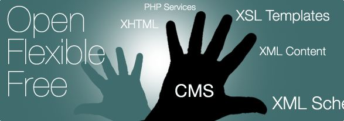

Mapix CMS is a very simple CMS that allows to modify any content in your websites without using a database.
All the content of your website is written in XML files that are editable through mapix back office (see the online demo).
Mapix is free (GNU GPL Licence), simple to use, extensible and will integrate many extensions in the following months : Forum, Blog, E-Commerce...
If you are interested in Mapix CMS developpement, do not hesitate to visit the sourceforge.net project site.